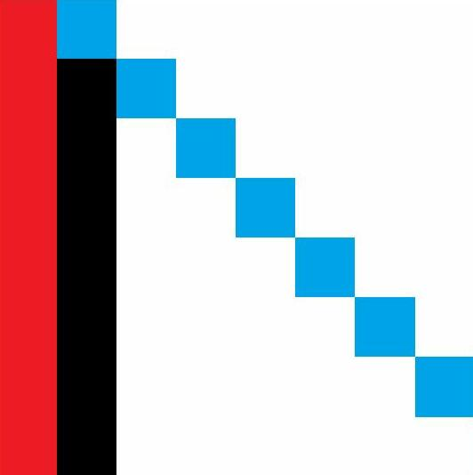
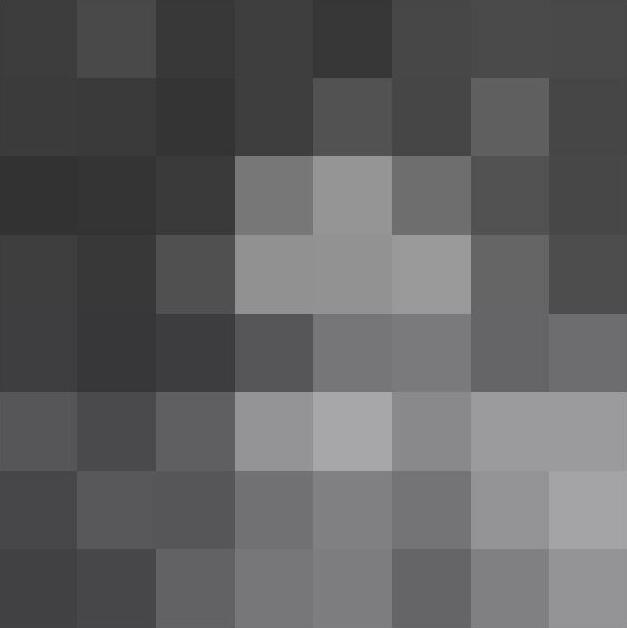
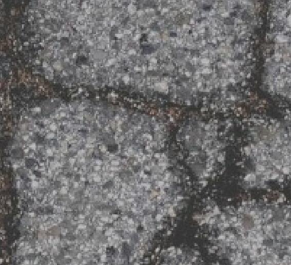
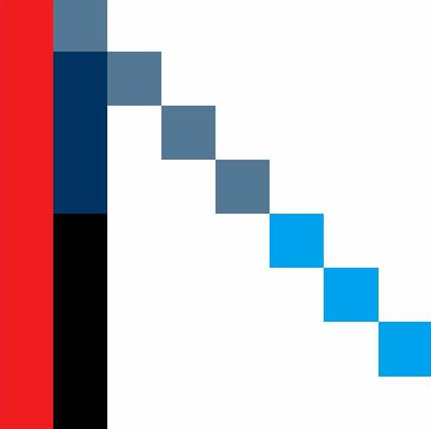
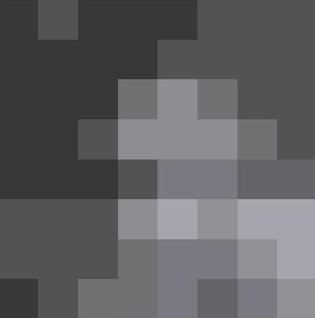

Porting a C++/OpenGL game to web browsers
Created on 2022, last updated on December 2024
The web-assembly platform allows to run application inside web browsers. From a C++ desktop application using SDL2 and OpenGL, I found the Emscripten toolchain that offers a way to port them on web browsers. In this post, I will detail steps to port my games on web browsers. Most of the code is available in TRE, a toolkit that I created and that I use as basement of my games.
Using Emscripten
The Emscripten web site is a good starting point. It helps to understand the limitations of the code being executed by web browsers. I will detail the some part of the code that should be adapted.
The main entry point
If it is not already the case, the game init/update/quit should be seperated in specific functions. With Emscripten, the "main()" entry-point is run once, and a java script is setup such that the web-brower will execute a callback at each frame. Consequently, the "main.cpp" will have this skeleton:
int app_init(); // put in the function all needed to initialize data. Run once. void app_update(); // actually the game-loop function. Run every frame. void app_quit(); // exit properly. Run once, only on Desktop int main(int argc, char **argv) { (void)argc; (void)argv; if (app_init() != 0) return -1; #ifdef TRE_EMSCRIPTEN emscripten_set_main_loop(app_update, 0, true); #else while(_continue_) { app_update(); } app_quit(); #endif return 0; }
Timing and the FPS monitoring
Because the app_update() method may not be called immediately after a previous call,
the compute of time should have this pattern:
static Uint32 oldtime;
int app_init()
{
// [...]
oldtime = SDL_GetTicks();
return status;
}
void app_update()
{
const Uint32 newtime = SDL_GetTicks();
const Uint32 dtms = newtime - oldtime;
oldtime = newtime;
// event managment ...
// game update(s) ... with dt = dtms * 1.e-3f
// submit render commands ...
SDL_GL_SwapWindow(window); // GPU present
}
Reading files
Web browsers don't allow (or heavily restrict) to access to the disk. The Emscripten toolchain can emulate the reading of files, by embedding them into the binary itself. Therefore, I advice to use coarser resources, and keep the total amount as low as possible. On the other hand, to keep the game loading smoothly, it's a good practice to "bake" the game resources into an optimized and specialized binary file.
Warning:
don't use std::size_t to read/write file because this type may not have the same byte-size than the desktop build.
In fact, the desktop has always 64bits std::size_t nowdays, but I obtain 32bits std::size_t on web-assembly with default configuration.
An example of implemention of a "baker" is avaliable in TRE. It uses a hand-made file format, that defines containers (called "blocks") from which the data can be accessed directly. If you need more features, such as versionning or safety, you can have a look on existing file formats, like HDF5.
Performance considerations
Avoid allocations during the app_update().
Pre-allocate as much as possible in app_int().
Unlike desktop applications, the available memory is preconfigured during the compilation, thus be aware of the amount of memory needed.
I didn't try the multi-threading yet. For simplicity, the web-version of my game will stay single threaded.
Mouse tracking and pointer lock
Web browsers allow the user to restrict the mouse control,
such that a web page cannot take full control of the mouse.
Therefore, the usual SDL methods SDL_WarpMouseInWindow() won't work.
Hopefully, Emscripten implements a way to capture the mouse with the SDL mouse relative mode.
Here a way to handle the mouse capture:
#include "emscripten/html5.h"
void _requestCaptureMouse()
{
SDL_SetRelativeMouseMode(SDL_TRUE);
}
void _requestReleaseMouse()
{
SDL_SetRelativeMouseMode(SDL_FALSE);
}
void _onMouseEvent()
{
if (SDL_GetRelativeMouseMode() == SDL_TRUE)
{
m_controls.m_mousePos.x += 2.f * float(event.motion.xrel) / m_screenResolution.x;
m_controls.m_mousePos.y += -2.f * float(event.motion.yrel) / m_screenResolution.y;
}
else
{
m_controls.m_mousePos.x = -1.f + 2.f * float(event.motion.x) / m_screenResolution.x;
m_controls.m_mousePos.y = 1.f - 2.f * float(event.motion.y) / m_screenResolution.y;
}
}
void _afterEvents()
{
}
Support of OpenGL ES - WebGL
Compared with a desktop application, there are additional limitations with graphics API. The "OpenGL-ES" flavor must be used (see OpenGL ES 3 specifications). Moreover, the web-assembly binary can only use the "WebGL" API (see WebGL 2.0 specifications).
Texture compression
OpenGL-ES does not permit to compress texture on the fly. Hence, the compression must be done on the software level. A vastly used compression format is the Ericsson Texture Compression (Ericsson/ETCPACK). TRE implements its own compression algorithms for the AEC, ETC2, DXT1, DXT3 formats. Those formoats are part of the OpenGL-ES specifications.
The ETC2 compression format handles (r,b,g) channels.
It compresses 4x4 pixels squares to 8-bytes sequence.
If the source format is RGB8 (1 byte per channel), the compression ratio is 8 / (16 * 3).
The 8-bytes sequence is defined as following:
Bit | 63-34 | 33 | 32 | 31-0 |
| Color-palette | Mode | FP | Look-up table |
- The bit
Modeencodes the switch between the individual mode or the differential mode. Other modes are defined in some circonstances, but I decided to only implement the two first modes. - The bit
FPencodes the flip direction, either horizontally (4x2), either vertically (4x2). In fact, the color-palette defines 2 base colors, and the pixel encoding will depend on which side of the split the pixel belongs to. - The bits
63-40encode the base colors of the palette:r0(4bits)|r1(4bits)|g0(4bits)|g1(4bits)|b0(4bits)|b1(4bits)for the individual mode,r0(5bits)|dr(3bits)|g0(5bits)|dg(3bits)|b0(5bits)|db(3bits)for the differential mode. - The bits
39-37encode the table index for the first 8 pixels (depending on the flip direction). - The bits
36-34encode the table index for the last 8 pixels (depending on the flip direction). - The bits
31,15encode the look-up index of the pixel 0, the bits30,14the pixel 1, ...
The AEC compression format handles the alpha channel.
It compresses 4x4 pixels squares to 8-bytes sequency.
If the source format is A8 (1 byte per pixel), the compression ratio is 8 / 16.
Bit | 63-56 | 55-52 | 51-48 | 47-0 |
| Base-alpha | Multiplier | Table-index | Look-up table |
- The alpha of each pixel is computed with
alpha = clamp(Base-alpha + Multiplier * Table[Table-index][pixel-idx], 0, 255). - The bits
47,46,45encode the look-up index of the pixel 0, the bits44,43,42the pixel 1, ...
Here some texts with the ETC2 compressor provided in TRE:
|
 |
 |
 |
|
 |
 |

|
| (up: original, down: compressed with ETC2) | ||
Render targets
The render targets are objects from which rendering can be drawn. The screen is a render target, that is builtin and automatically created by the driver. For example, render targets can be created to implement the shadows and post-effects. The support of the render-target formats varies between the OpenGL-Core and OpenGL-ES standards.